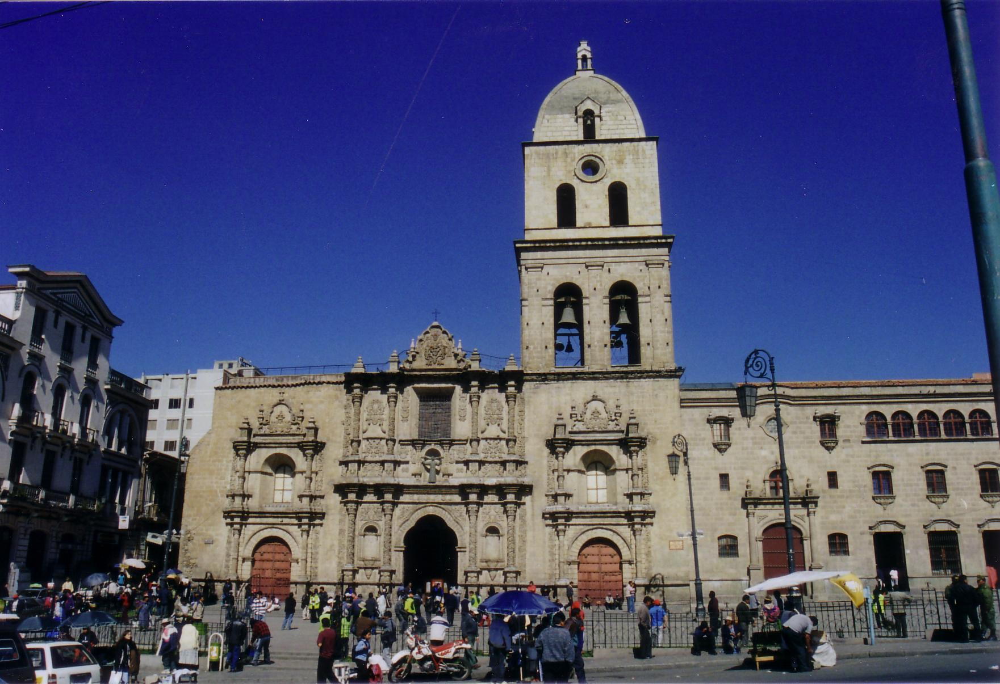

La Catedral Metropolitana Nuestra Señora de La Paz es una basílica menor situada en la Plaza Murillo de la ciudad de La Paz. En Bolivia. Uno de los lugares para visitar en Semana Santa
La Catedral Metropolitana Nuestra Señora de La Paz es una basílica menor situada en la Plaza Murillo de la ciudad de La Paz. En Bolivia. Uno de los lugares para visitar en Semana Santa Copacabana es una ciudad boliviana en el lago Titicaca, conocida por los festivales religiosos y las casas con tejados rojos. Es una base para explorar la Isla del Sol y la Isla de la Luna, que tienen sitios arqueológicos incas sagrados. Cerca de la plaza principal de Copacabana, la Plaza 2 de Febrero, está la Catedral de la Virgen de la Candelaria, un importante sitio de peregrinación con domos moriscos y la escultura de la Virgen de la Candelaria.
Copacabana es una ciudad boliviana en el lago Titicaca, conocida por los festivales religiosos y las casas con tejados rojos. Es una base para explorar la Isla del Sol y la Isla de la Luna, que tienen sitios arqueológicos incas sagrados. Cerca de la plaza principal de Copacabana, la Plaza 2 de Febrero, está la Catedral de la Virgen de la Candelaria, un importante sitio de peregrinación con domos moriscos y la escultura de la Virgen de la Candelaria.La Basílica Menor de San Francisco de la ciudad de La Paz, Bolivia, es un templo católico bajo la advocación de San Francisco de Asís. Está situado en el centro de la ciudad. Forma parte del conjunto conventual que da el nombre a la plaza adyacente Plaza Mayor de San Francisco.